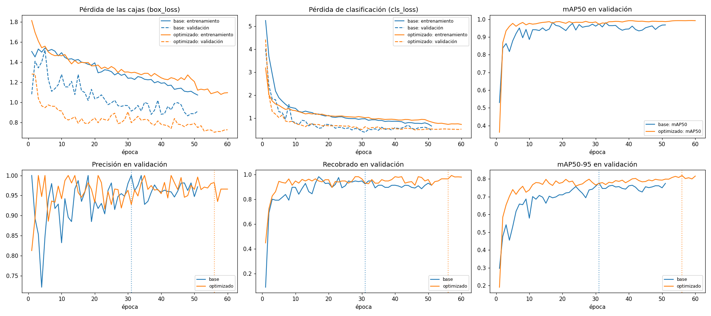
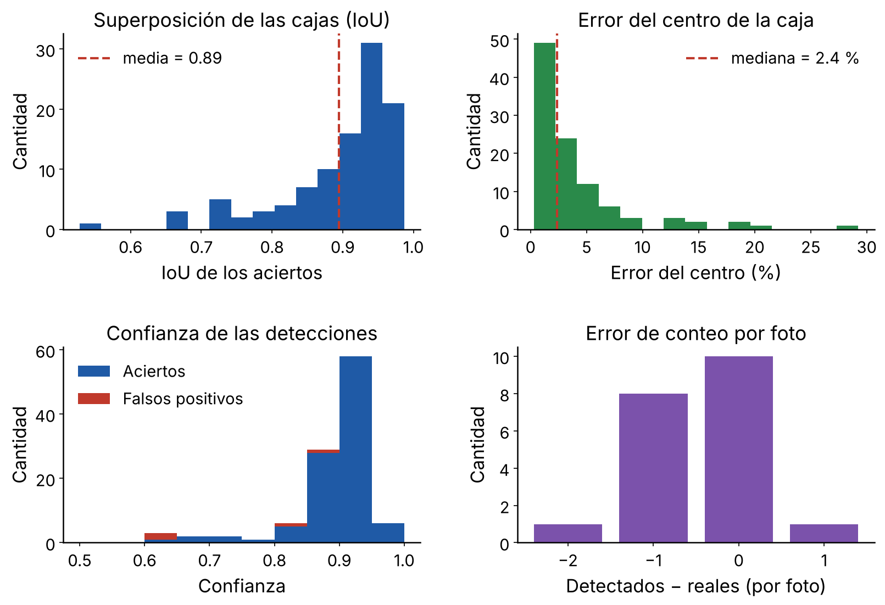
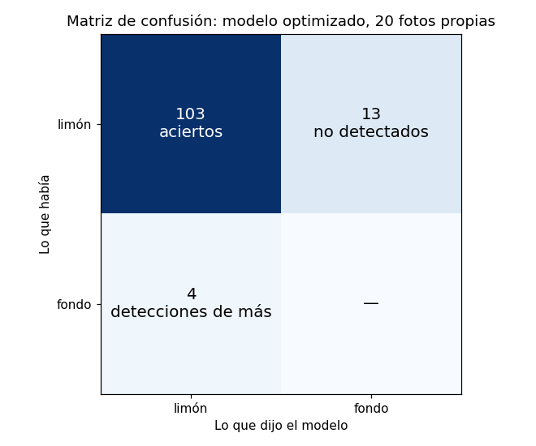
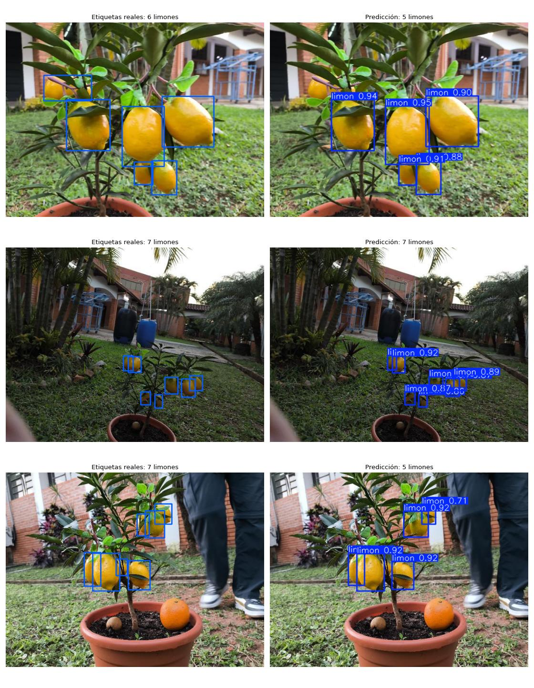

Habilidades
- Python
- MATLAB
- SolidWorks
- KiCad (en práctica)
- Machine Learning
- Visión artificial
- Detección de objetos (YOLO)
- Optimización de hiperparámetros (Optuna)
- Pandas
- OpenCV
- Matplotlib
- Google Colab
- GitHub
Educación
Ingeniería Mecatrónica
Facultad de Ingeniería, Universidad Nacional de Asunción (FIUNA) · en curso
Cursos
Soldadura
Seguridad industrial y salud ocupacional
Idiomas
Inglés
Alemán (en aprendizaje)
Proyecto de Inteligencia Artificial
Detector de limones con YOLO para un robot recolector
Una red neuronal que encuentra limones amarillos en la imagen de la cámara de un robot recolector, para que el brazo sepa adónde ir. Se entrenó, se optimizó con Optuna y se analizaron sus errores. Está pensado y validado para un ambiente controlado (un limonero en maceta).
Origen del trabajo. El detector parte del proyecto grupal de Robótica 1 (Grupo 2, FIUNA), del que formo parte: de ahí vienen el robot, las fotos propias del limonero con sus etiquetas y la versión 3 del detector. Para esta materia reorganicé el proyecto y sumé la generación de features, la optimización de hiperparámetros con Optuna y el análisis de errores.
Cómo se hizo
- PreprocesamientoLimpieza de los datos y 4 features por limón.
- Modelo baseYOLO26n entrenado y evaluado.
- Optimización12 pruebas con Optuna.
- VisualizaciónPredicciones, curvas, matriz de confusión y errores.
Datos y modelo
Dataset
915 imágenes públicas de limones en el árbol (Roboflow Universe) más 50 fotos propias del limonero, etiquetadas por el grupo. Se generaron 4 features por limón: tamaño, forma, color y densidad.
Modelo
YOLO26n (Ultralytics) con transfer learning desde COCO. Los hiperparámetros se buscaron con Optuna: 12 pruebas sobre tasa de aprendizaje, regularización, aumento de datos y peso de las fotos propias.
Visualización
Curvas de entrenamiento, matriz de confusión, histogramas de errores y análisis de fallas según el tamaño y el color del limón.
Resultados
Modelo optimizado, sobre las 10 fotos de test (58 limones), que no se usaron para elegir nada. Con tan pocas imágenes de prueba, las métricas son orientativas.
| Test (10 fotos) | Base | Optimizado |
|---|---|---|
| Precisión | 0,960 | 0,963 |
| Recobrado | 0,862 | 0,948 |
| F1 | 0,908 | 0,956 |
| mAP50 | 0,938 | 0,967 |
| mAP50-95 | 0,723 | 0,729 |
La optimización mejoró sobre todo el recobrado (de 0,86 a 0,95). En mAP50-95 la diferencia es de 0,006, demasiado chica para sostenerla con 58 limones.
Hacé clic en cualquier figura para verla a tamaño completo.



